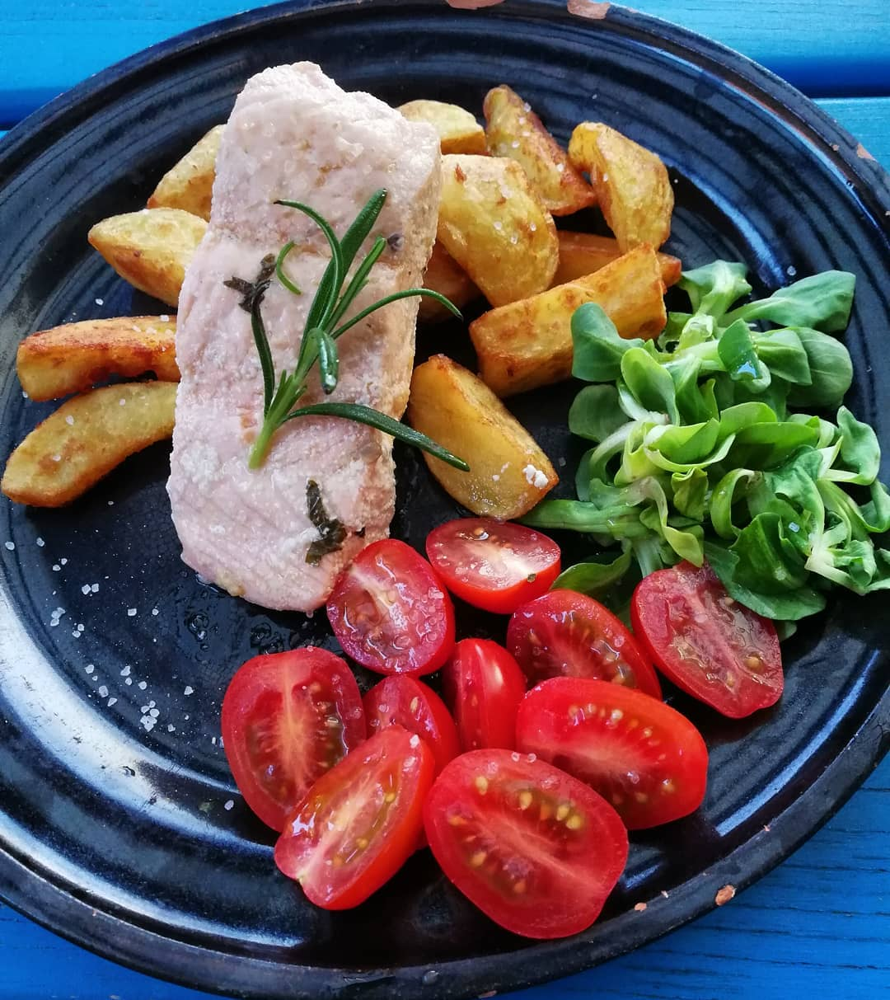

Smažené hranolky podľa @modry_stul — Normy Jedál
Pro velký úspěch včerejší večeře,dnes opět losos,ale dnes trochu jinak ,s domacimi hranolkami smaženými podle receptu na belgické hranolky, které jsou považovány za nejlepší na světě
#lososshranolkamiazeleninou#vecere#smazenehranolky#
losos#vecereprovaedniden#dnesvarim#varimkazdyden#cena#salmon
#barevnejidlo #smazenebrambory #pomfrites #fish
Recept na belgické smažené hranolky
1/2 kg brambor
slunečnicový olej
sůl
Brambory typu C oloupeme,nakrájíme na hranolky a vaříme v osolené vodě úplně doměkka.Nechame vychladnout a potom smažíme ve vysoké vrstvě oleje asi 5 minut,aby byly křupavé. Lepší hranolky jsem nejedla